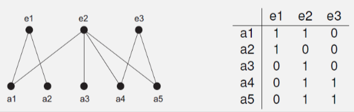

Sociogram: graph-like representation of social structure
calculate stats like eccentricity, closeness, betweenness centrality
proximity prestige
D is digraph with n vertices
influence domain R-(v) of v is set of vertices from which v can be reached
proximity prestige: (fraction of vertices that can reach v) / (average distance of those vertices to v)
ranked prestige
example:
structural balance
a signed graph (edges labelled +/-) is balanced if all its cycles are positive (product of edge labels is positive)
if the graph has no cycles, it is balanced
signed graph is balanced iff its vertices can be partitioned into two disjoint subsets such that:
affiliation networks
people are tied together through membership relations
social structures consist of actors and events
naturally bipartite, with two sets (Va actors, Ve events)
represented with an actor-event matrix:
